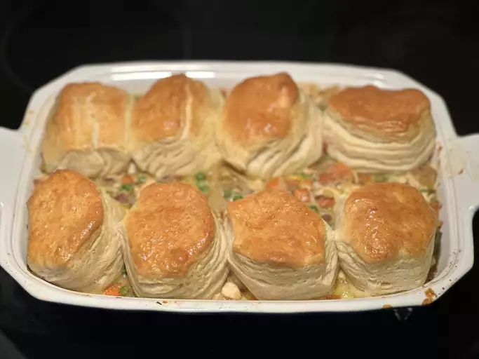

Chicken Pot Pie with a Biscuit Crust

Description
A chicken pot pie recipe with a twist! Perfect for those who love biscuits,
but lack an odd enough method consumption.
Ingredients
- 1/4 cup of butter
- 1 small onion, chopped
- 3 medium celery ribs, chopped
- 3 medium carrots, chopped
- 2/3 cup frozen peas
- 3 tablespoons chopped fresh parsley
- 1/4 teaspoon dried thyme
- 1/4 cup all-purpose flour
- 2 cups lower-sodium chicken broth
- 2/3 cup half-and-half cream
- salt and ground black pepper to taste
- 3 cups cooked chicken, cut into bite sized pieces
- 16.3 oz can refrigerated flaky-style biscuits
- 1 large egg yolk, beaten
- 1 tablespoon water
Directions
- Step 1
Gather your ingredients and preheat
the oven to 350 degrees F (175 degrees C).
- Step 2
Melt butter in a skillet over medium-low
heat. Add onion, celery, and carrots and cook, stirring occasionally,
until tender, about 15 minutes.
- Step 3
Stir in peas, flour, parsley, and thyme and cook,
stirring constantly, until the flour coats the vegetables and begin to fry, about 5 minutes.
- Step 4
Whisk in chicken broth and half-and-half, and cook
until the sauce is thick and bubbling. Stir in cooked chicken, and season
with salt and pepper.
- Step 5
Transfer chicken, vegestables, and sauce into a 7x11-inch baking dish.
Arrange biscuits on top of the filling.
- Step 6
Beat egg yolk with water in a small bowl. Brush mixture over the biscuits.
- Step 7
Bake in the preheated over until the biscuits are
golden brown and the pie filling is bubbly, 20 to 25 minutes.
- Step 8
Remove from the oven and let rest for 10 minutes before serving.